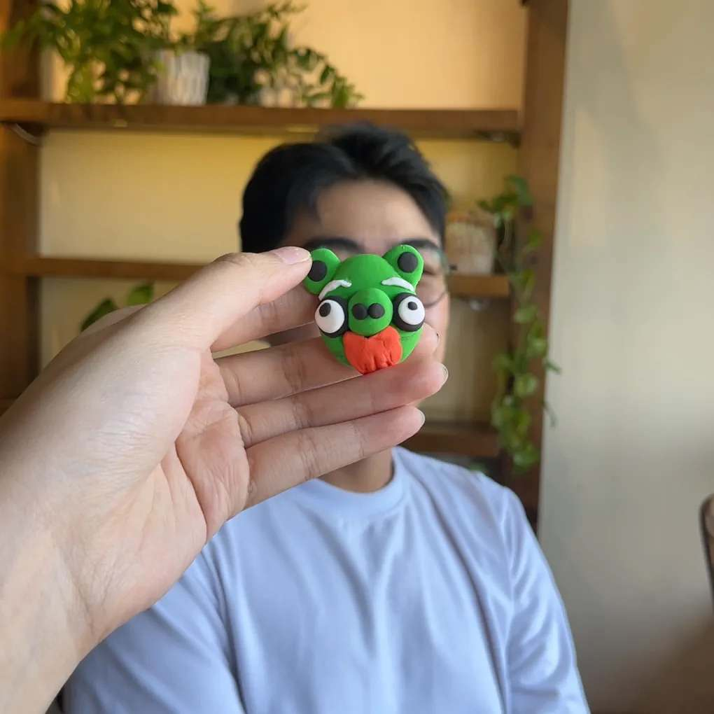
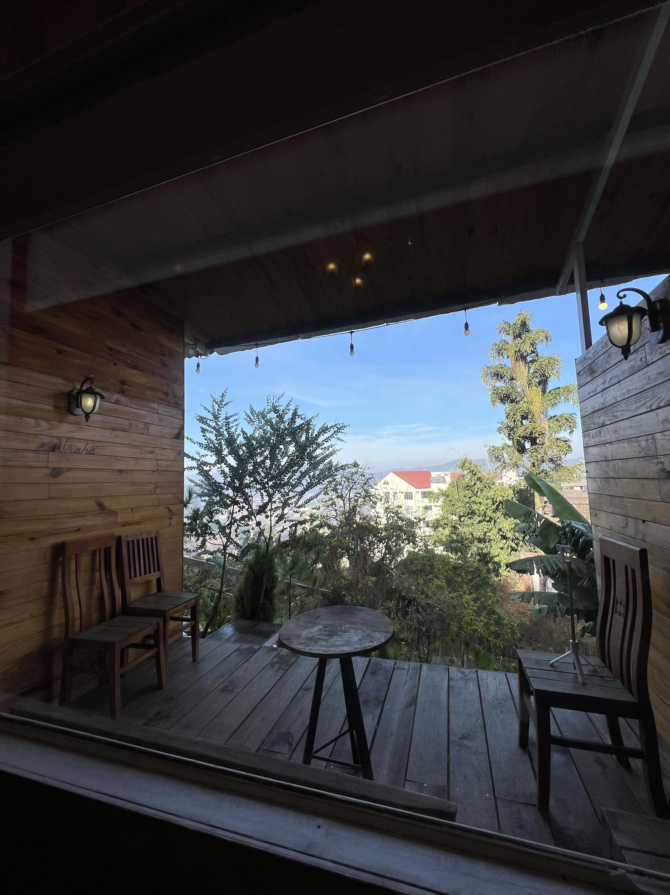
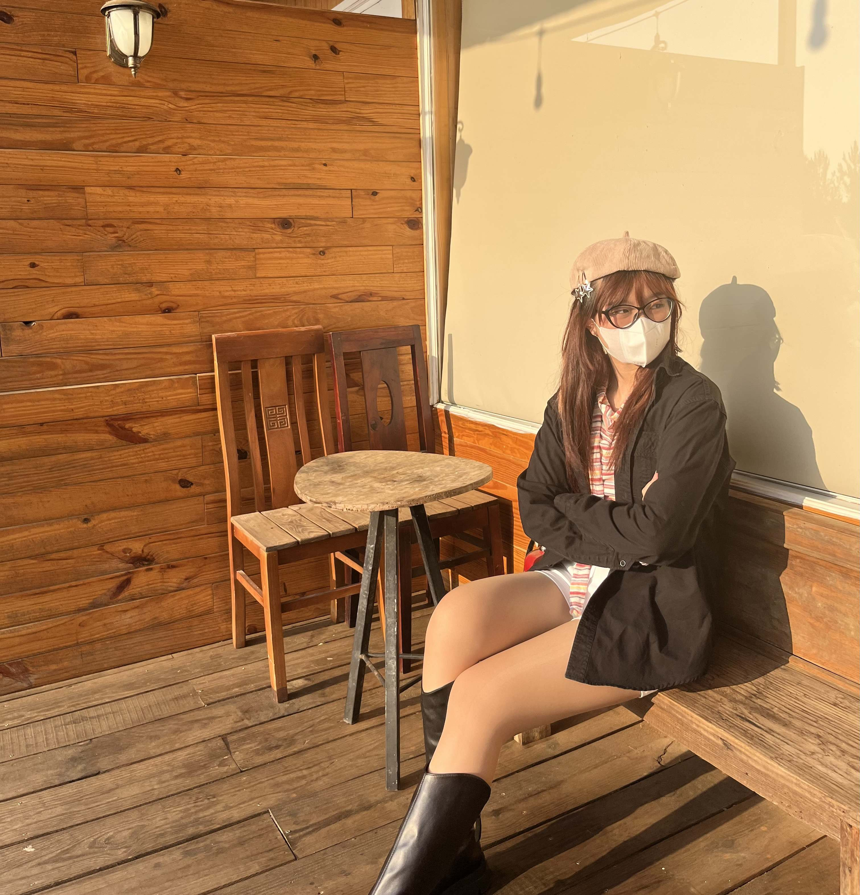
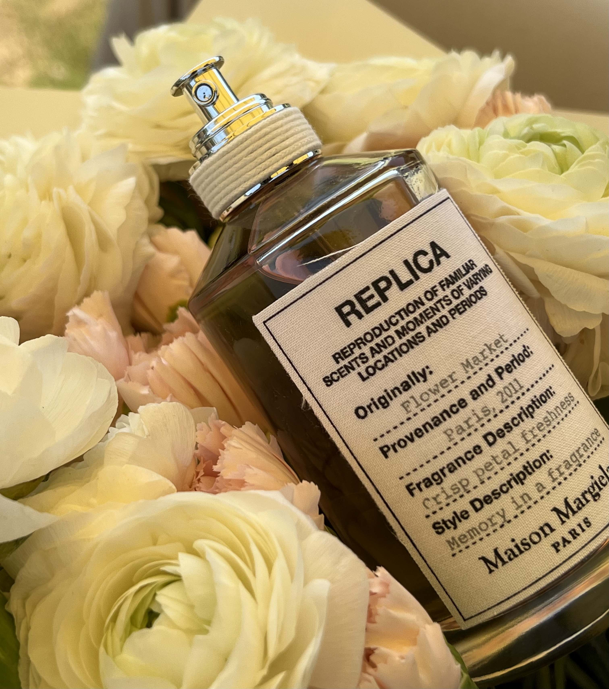
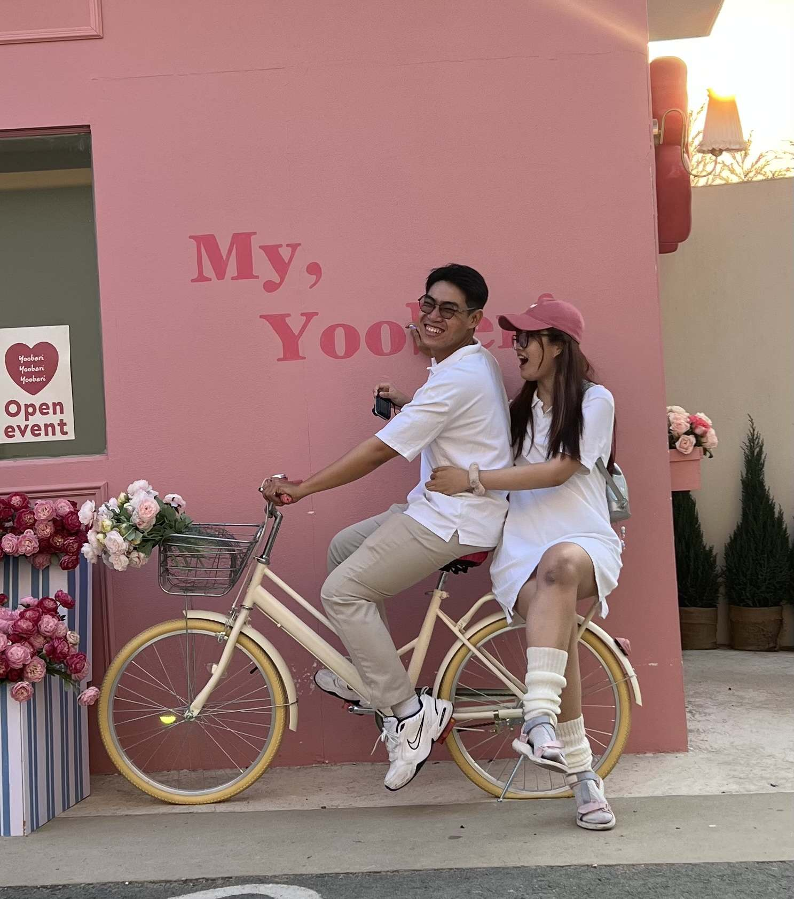
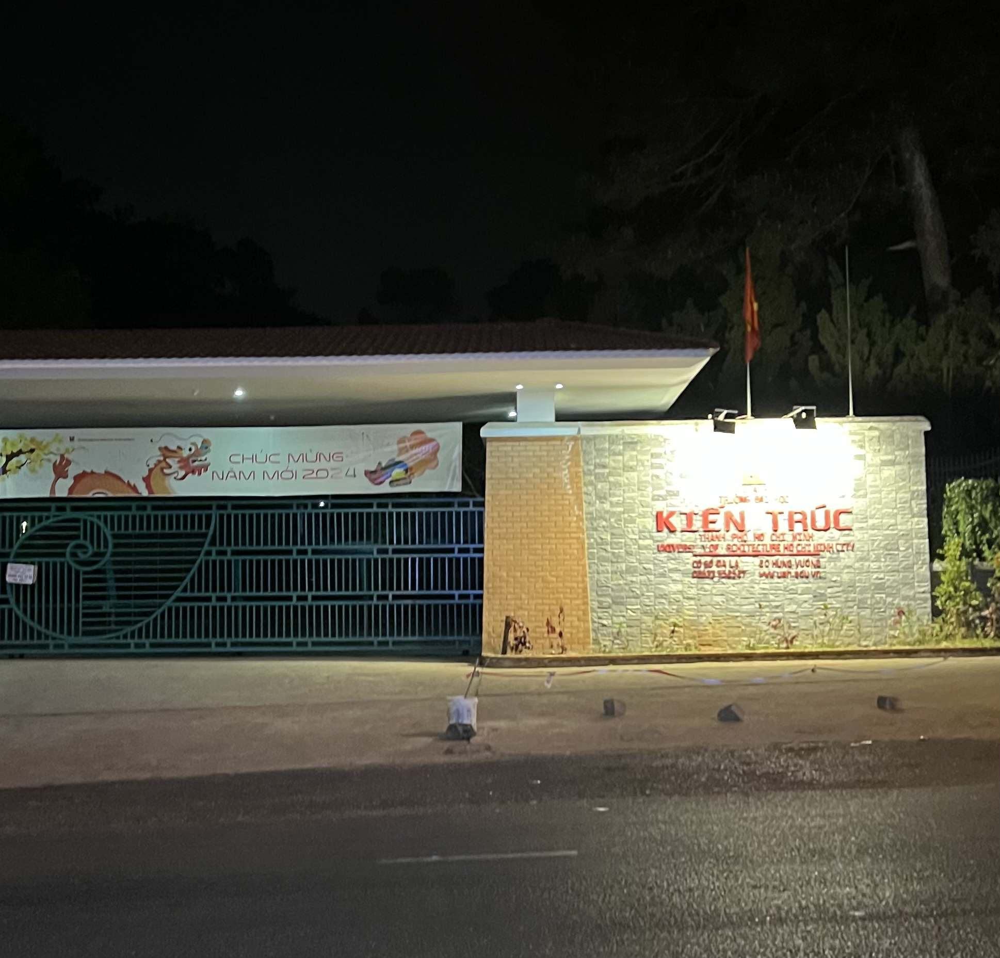
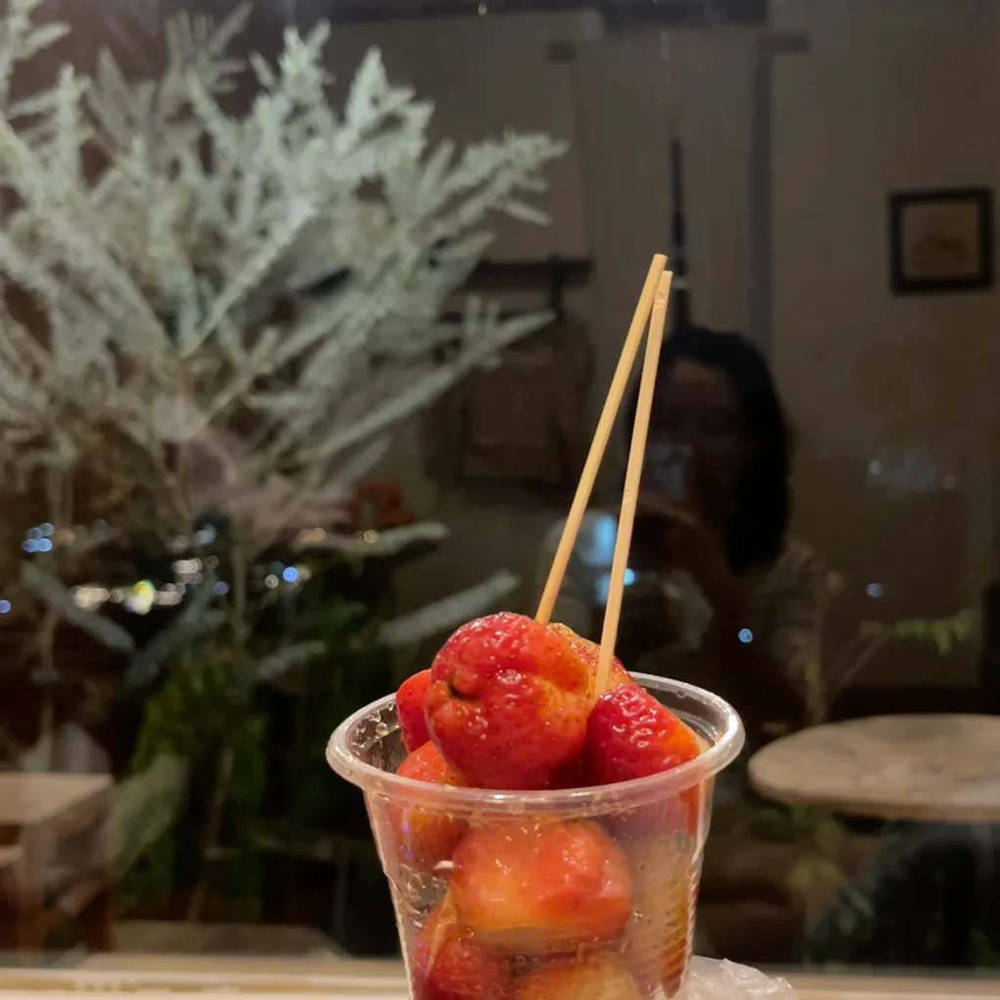
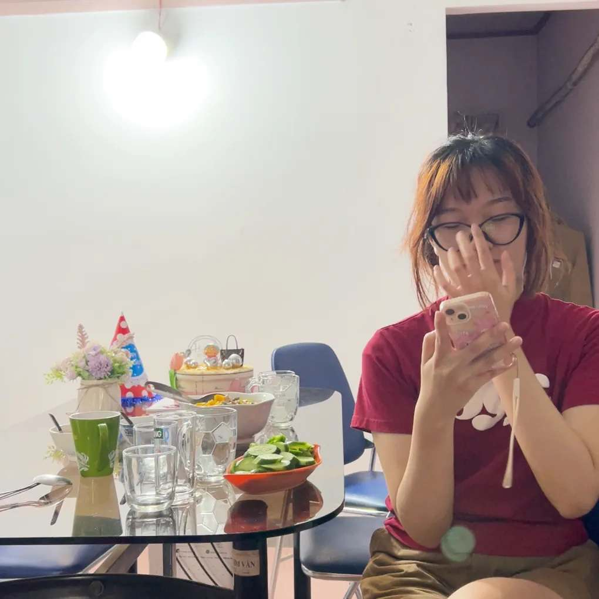
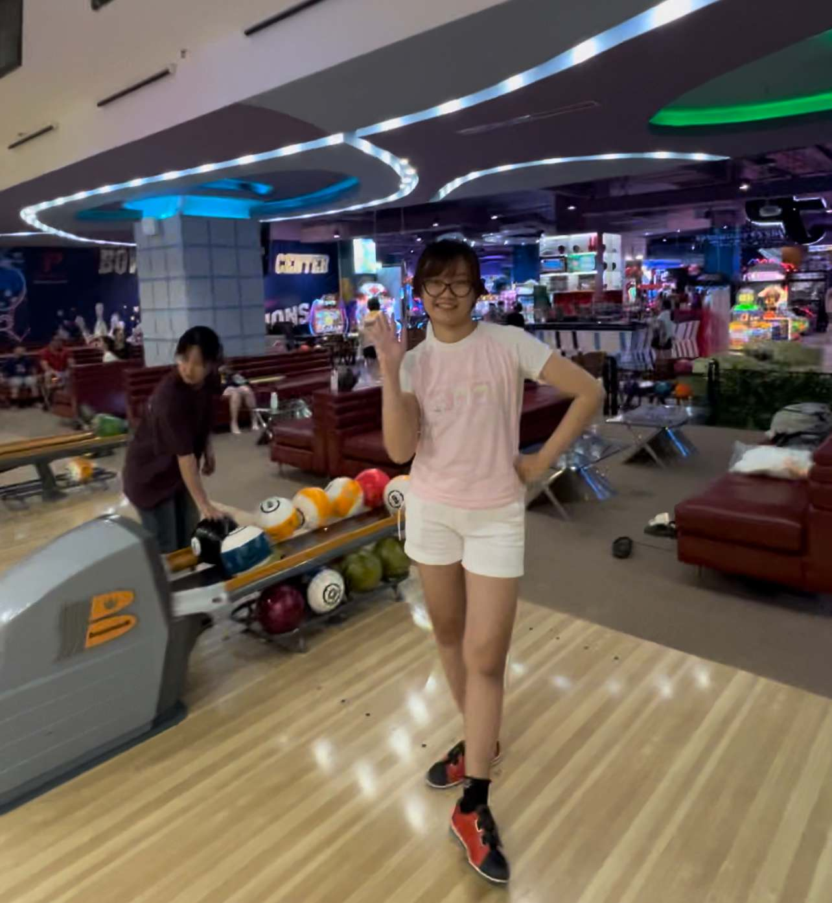

Chống chỉ định cho người cô đơn
Chào bé iu của anh, chào các bạn thân yêu,
Đây sẽ là cuốn sách nho nhỏ kể lại các câu chuyện chúng tôi đã đi qua sau 6 tháng chính thức yêu nhau, nếu bạn không thích chuyên mục này, hãy close tab ngay tại đây.
Trân trọng,
TaNa
Quán Lông chó - Quận 1
Đêm đầu tiên chúng tôi gặp nhau - 5/11/2023
Èo, phải nói sao ta. Em rủ tôi đến 1 quán bar giấu tên, cảm xúc rất phức tạp vì tôi chưa bao giờ đi đến một nơi nào như vậy. Tôi mặc 1 bộ đồ style khá "good_boy", trải nghiệm cũng khá thú vị và chúng tôi có ấn tượng khá tốt ngay từ lần gặp đầu tiên. Đó là một đêm ấn tượng.
Photo Booth ở đâu không nhớ nữa
(Vì lúc này trong đầu tôi chỉ có hình bóng em)
First Date - 19/11/2023
Chà, tuy chủ đề ảnh là 20/11 (lý do tại sao lại chọn thì những người yêu mến tôi sẽ biết) nhưng chúng tôi enjoy sớm 1 ngày haha. Đây là hôm đầu tiên chúng tôi hẹn gặp riêng với nhau sau cái đêm đi bar định mệnh ở trước, lúc này cả 2 vẫn chưa chính thức hẹn hò nhưng cảm giác vẫn rất chi là đáng yêu.
First Date - 19/11/2023
Tiếp tục chuyên mục first date khi em dẫn tôi đi Hồ Con Rùa, thú thật sau hơn 6 năm sống tại SG, đây là lần đầu tiên tôi đến nơi này.
(Thật là hai lúa làm sao!!!!)
Bức ảnh đẹp nhất ngày hôm đó
Đây là bó hoa đầu tiên mà tôi tặng em, trông em thật đáng yêu làm sao, xem lại mà cảm giác của tôi vẫn nguyên vẹn như lúc đó
1 ngày chilling ở Hidden Bar - 25/11/2023
Chúng tôi đi ngay vào 1 ngày mưa, và hôm đó tôi bất cẩn bỏ quên áo mưa ở nhà (áo mưa bự nhé). Thế là 2 đứa phải tạt vào 1 cây ATM ven đường trú mưa. Xem lại bức ảnh mà tình biết bao luôn!
Chúng tôi chính thức yêu nhau - 3/12/2023
Tấm ảnh photo booth tiếp theo được đặt ở phố đi bộ Nguyễn Huệ. Chúng ta xinh quá ahihi!
Một ngày đi chơi vào sáng sớm - 10/12/2023
Chúng ta khởi hành lúc 5h sáng để enjoy cafe bệt, đó cũng là lần đầu tiên của kẻ hai lúa 6 năm ở Sài Gòn =)). Sau thì chúng ta đi trải nghiệm nhà thờ "hồng" Tân Định, nhìn cũng khá đẹp nhỉ? Hôm đó cũng là lần đầu tôi đi xem concert NCT trong rạp phim với em.
TADAAAA! GIÁNG SINH 2023 ĐÂY RỒI!
Thế là sao bao lâu, anh lại cùng đón giáng sinh cùng với người anh yêu rồi! Chúng ta đã trưởng thành hơn, không ồn ào hơn, giáng sinh năm đó anh cảm thấy ấm áp lắm em biết không. IUUUUUUU
Món quà vụng về của Santa X dành cho bé pu ahihi.
Quà không bao nhiêu, được mỗi cái tấm lòng <3. Thú thật tôi cũng không phải dân khéo tay gì, nên nhìn vô là biết vụng về ngay haha!
Món quà của bé iu dành cho anh
Nó luôn nằm đâu đó trên bức tường phòng anh. Anh xem nó như một món quà vô giá, một kỉ niệm không bao giờ quên đối với anh.
Đón tết dương lịch 2024 cùng với gia đình của bé
Lần đầu tiên em ra mắt anh với gia đình, anh hồi hộp lắm nhưng sau cùng thì đó là một kỉ niệm đáng nhớ. Mọi người rất tuyệt vời!
Đón tết dương lịch 2024
Check in nhà thờ Song Vĩnh ở Bà Rịa, nơi này cũng khá gần nhà của em.
Đón tết dương lịch 2024 - Vũng Tàu
Cá nhân tôi thấy thì view khá ổn nhưng nước uống thì không xuất sắc lắm, quan trọng là đi cùng em thì mọi thứ sẽ đều vui!
Đón tết dương lịch 2024 - Vũng Tàu
Chụp ở ngọn hải đăng ne, quá đã luôn, đúng là thổ địa dẫn đi chơi cái khác bọt liền!
Đón tết dương lịch 2024 - Vũng Tàu
Một trong những điều đáng nhớ nhất của chuyến đi này là chúng ta đón được cả bình minh lẫn hoàng hôn một cách TRỌN VẸN! Cảm giác đó thật tuyệt vời biết bao. Tôi có quay 1 đoạn timelapse cả quá trình mặt trời mọc, cứ như là nó trồi lên từ mặt biển vậy, ảo diệu!
Đón tết dương lịch 2024 - Vũng Tàu
Bình minh đẹp nhất là em, hoàng hôn đẹp nhất là khi em cười <3
27/01/2023 - Những ngày cận Tết Nguyên Đán
Đây là hôm 2 đứa đi chơi ở bãi cỏ landmark 81 ne! View khá đẹp đó
2/01/2023 - Những ngày cận Tết Nguyên Đán
"Bé muốn có đồ chơi!" - Thế là hadilao tặng luôn cho cái quạt cầm tay ne, bông cũng xinh nữa (tại vì người nhận cũng xinh đó <3)
28/01/2023 - Những ngày cận Tết Nguyên Đán
Ngày cuối cùng 2 đứa đi chơi trước khi anh về quê ăn Tết cùng gia đình, điểm nhấn vẫn là triển lãm tranh khá độc lạ.
28/01/2023 - Những ngày cận Tết Nguyên Đán
Cùng khá nhiều món đồ cũng như view chụp ảnh. Một chút kỉ niệm đáng nhớ những ngày cuối năm, iu bé ahihi.
24/02/2024 - Chúng tôi gặp lại nhau
24/02/2024 - Người bạn mới
Cũng ngay ngày này tôi gặp được người anh zai Phú Yên hàng xóm. Cũng khá vui, không biết sau này 2 ae có nhiều cơ hội gặp nhau hay không.
24/02/2024 cũng là 1 ngày rất trọng đại với chúng tôi, lật qua trang sau nhé <3
24/02/2024 ->>>>>>> Lật ngay nào!
24/02/2024 - Đứa con tinh thần chính thức ra đời
Belli là một trong những khởi đầu mới của 2 đứa với đam mê về mùi hương. Belli sinh ra là để mang lại những hương thơm của cuộc sống. Hi vọng 2 đứa sẽ tiến xa hơn được nữa.
24/02/2024 - Những dòng nhật kí mới
Cuốn sổ chúng ta lại thêm được vài trang mới rồi đó baby à. Yêu quá đi!
09/03/2024 - Đi chơi hậu 08/03
Chúng tôi đi coi phim Dune ne, imax 4d các kiểu luôn.
Nhưng hôm đó chúng tôi cũng không quên làm 1 "nháy" kỉ niệm ở photo booth hihi.
09/03/2024 - Thêm 1 tấm ảnh mới cho cuốn album
<Tối 14/03/2024 - GET GO ĐÀ LẠT THÔI!!!!
Chúng tôi đi xe Đà Lạt ơi, khởi hành lúc 11h đêm.
Book giường đôi, giá vừa rẻ, mà còn vừa ấm áp nữa ahihi.
5h30 sáng 15/03/2024 - Chúng tôi cập bến Đà Lạt.
Tôi chủ quan mặc cái quần đùi, LẠNH!!!!!!
Sáng 15/03/2024
Ngay lúc ghé homestay thì chúng tôi vẫn chưa lấy phòng được vì người thuê cũ chưa trả. Một trong những thứ chúng tôi phải trải nghiệm sau đó là lấy xe máy đi ăn bánh mì chấm ngay lập tức. Giá thuê xe ở đây cũng rẻ, với xe tay ga là 130k 1 ngày
Sáng 15/03/2024
Sau khi ăn no nê thì phải làm ly sữa đậu nành nóng nữa chứ hề. Sửa ở đây làm đậm vị, béo, uống cực kì ngon luôn! 10/10
Sáng 15/03/2024
Ăn uống no nê xong chúng tôi đi dạo khu hồ Xuân Hương, có cái cây mọc bông tím tím nhìn cũng lạ mắt quá hề. Ở đây thì đặc sản là rừng thông thênh thang, nhìn siêu đẹp.
Sáng 15/03/2024
Lúc đó có ghé moss mua ít đồ chơi với đất sét để ngồi chơi chơi trong lúc đợi homestay gọi nhận phòng.
Sáng 15/03/2024 - Check in địa điểm quen thuộc nè!!!!!
EM
Sáng 15/03/2024 - Check in địa điểm quen thuộc nè!!!!!
và TÔI
Sáng 15/03/2024
Check in Katinat, ngồi nặn đất sét, hôm đó tôi nặn được mấy con thú vô tri siêu nhiều, khác hẳn với em, nhưng dù gì thì cũng vui lắm.
Sáng 15/03/2024!
Tác phẩm của tôi đây này! Vô tri chưa haha
Sáng 15/03/2024
Còn đây là tác phẩm do chúng tôi làm cùng! Đúng là thuận vợ thuận chồng quá đi hả kk.
Sáng 15/03/2024!
1 Tấm hình hai đứa chụp kỉ niệm ở katinat
Sáng 15/03/2024
Tiếp tấm nữa nè hihi!
Trưa 15/03/2024!
Đến trưa đói quá vẫn chưa thấy homestay gọi, chúng tôi dẫn nhau đi ăn mì ramen với cơm cà ri. Quán này decor đẹp, đồ ăn ngon, đánh giá 9/10.
Trưa 15/03/2024
NHẬN PHÒNG RỒI!!!! Check in vài tấm thôi. View ở đây nhìn cũng khá chill, homestay làm theo style nhà gỗ nên cũng khá độc đáo
Trưa 15/03/2024!
Em xinh quá! Nên thôi, chụp thêm tấm nữa. Tư hào vì người yêu mình xinh quá đi thoi <3.
Chiều tối 15/03/2024
Món thứ 2 must try in DaLat: Bánh khọt! Và cũng kèm theo... ly sữa đậu nành nóng nữa ahihi. 9.5/10 nhá!
Tối 15/03/2024!
Một trong những điều nhất định bạn phải dẫn người yêu đi đến ở Đà Lạt là dắt cô ấy đến Khu chợ hoa, mua cho cô ấy một bó bông thật đẹp bạn nhé.
Tối 15/03/2024
Dạo dạo 1 hồi trong chợ Đà Lạt có ban nhạc cổ truyền ghé vô xem trải nghiệm cùng bé ahihi.
Tối 15/03/2024
Ghé làng farm mua 1 ít đồ lưu niệm về cho mọi người. Giờ mới biết ban nhạc nãy là của Làng farm mời về phục vụ mọi người.
Tối 15/03/2024!
1 góc khác tại Làng Farm.
Tối 15/03/2024!
Dạo 1 hồi đói quá ghé ăn vặt ban đêm ahihi.
Tối 15/03/2024!
Kết thúc 1 ngày ăn chơi tại Đà Lạt. Về lại homestay thooiiiii!
Một chút trải lòng về ngày đầu tiên!
"Lạnh, siêu nhiều dốc và đẹp hơn tôi nghĩ rất nhiều" sẽ là câu nói mà bản thân tôi dành cho Đà Lạt với góc nhìn là lần đầu tiên trong đời tôi ghé thăm nơi này. Việc thử thách mình với những con dốc làm tôi cảm thấy trải nghiệm của chuyển đi trở nên hứng thú hơn bao giờ hết! Con người thân thiện, đồ ăn ngon, phong cảnh dù cho đã đô thị hóa đi rất nhiều nhưng vẫn giữ cho mình 1 cái gì đó rất thơ! Những lúc trời lạnh, có cái ôm của em từ đằng sau làm tôi cảm thấy ấm áp hơn bao giờ hết. Cảm ơn em vì đã đến bên tôi. Chúng ta cùng về nhà thôi, cái lạnh này sẽ thật tuyệt vời nếu như có em bên cạnh, và chúng ta đã có ngày đầu tiên rất tuyệt vời tại Đà Lạt.
Sáng 16/03/2024 - Ngày thứ 2 tại Đà Lạt
Ghé ra chiếc vườn nhỏ của homestay hít khí trời tươi mát và ngắm những bông cẩm tú cầu được trồng và chăm sóc kĩ lưỡng.
Sáng 16/03/2024
Cẩm tú cầu mọc trên cây nhìn tươi và đẹp hơn khi mua ở Sài Gòn rất nhiều! Em rất thích loại bông này, phải chăng mọi thứ xung quanh cũng đang ủng hộ cho cuộc tình chúng ta?
Sáng 16/03/2024
Trong lúc đợi cô ấy trang điểm thì tôi có thử qua cảm giác ăn mì gói uống cafe nóng. Ta nói nó đã!!!! Thổi miếng mì khói nó bay nghi ngút haha, ăn nó ấm cái bụng.
Sáng 16/03/2024
Nhưng sau đó thì dẫn em iu đi ăn sáng liền, để bé đói anh chịu nào nổi. Nhưng có lúc xui lúc may, và.....quán này không ngon! 6d
Trưa 16/03/2024
Welcome to Tà Nung! Địa điểm này khá xa TP. Đà Lạt, đổi lại chúng tôi đến được một đồng hoa tuyệt vời ông mặt trời luôn các bạn ạ. NHƯNG! Em vẫn là một trong những bông hoa đẹp nhất của cuộc đời tôi.
Trưa 16/03/2024

Em xinh xắn bên những bông hoa lavender, đây là lần đầu tiên tôi thấy hoa này ngoài đời thực đó! Đây là chỗ mà em chụp nhiều hình nhất, cá nhân tôi cũng thấy siêu đẹp nhé.
Trưa 16/03/2024

Thêm một chút cơm tờ ró của chúng tôi nhé ahihi
Trưa 16/03/2024
Cá nhân tôi rất recommend địa điểm này cho các bạn nhaaaa! Thức uống rẻ, cảnh đẹp, có chỗ ngồi nghỉ nữa.
Trưa 16/03/2024
Một góc quảng cáo
Trưa 16/03/2024
Replica Flower Market
Chai nước hoa cho nữ rất hợp vibe tại Đà Lạt này, hương hoa trắng chủ điển không quá ngọt, ngửi siêu dễ chịu luôn các nàng nhé.
Chiều 16/03/2024
Sau khi về lại homestay nghỉ trưa thì chúng tôi checkin địa điểm mới. Cafe Yooberi (Nếu tôi nhớ không nhầm). Quán này có nhiều khu check-in lắm, trang sau còn nữa ahihi.
Chiều 16/03/2024
Tấm ảnh xe đạp, nhìn cứ như là hình cưới vậy, tôi mong điều này sẽ trở thành sự thật chứ nhìn chúng tôi đáng yêu quá đi thooiii. Đây sẽ là view khu đầu tiên nhé
Chiều 16/03/2024
1 góc check-in khác ở Yooberi.
Chiều 16/03/2024
Thêm góc nữa hen, trong cái nhà kia có cái nệm với mấy con gấu nhìn đẹp lắm.
Tối 16/03/2024 - Đêm cuối tại Đà Lạt
Đêm cuối chúng tôi dẫn nhau đi ăn nướng, trời ơi 6h tối thôi mà đường đi nó lạnh ơi là lạnh, ăn nướng siêu ngon luôn các bạn ạ.
Tối 16/03/2024 - Đêm cuối tại Đà Lạt
Đồ ăn nè, nhìn quá đã đi thôi. Ăn xong là người đầy mùi thịt nướng luôn á.
Tối 16/03/2024
Ăn xong chúng tôi về lại Thành phố, trên trường đi chúng tôi bị lạc đường, và tình cờ bắt gặp được trường ĐH Kiến Trúc cơ sở Đà Lạt (Cho những ai chưa biết thì bé iu của tôi tốt nghiệp ĐH Kiến Trúc TP. HCM nhé). Thật là tình cờ quá đi!!!!
Tối 16/03/2024
Chúng tôi có ghé lại chợ đêm mua hộp dâu về ăn với ít cái móc khóa len lưu niệm về cho mấy đứa nhỏ. Và đi ngủ để mai dậy sớm chuẩn bị đồ quay lại Sài Gòn thôi
Sáng sớm 17/03/2024
Dậy thôi em iu oiiii, cùng nhau trải nghiệm cảm giác ăn mì gói uống gì đó nóng nóng vào sáng sớm ở Đà Lạt nè! Chúng ta sắp phải về lại Sài Gòn rồi đó.
Sáng 17/03/2024
Chơi chưa đã nên sau khi đã thu dọn đồ đạc xong, chúng tôi tận dụng nốt thời gian còn lại trước khi xe tới để đi đến một nơi nào đó nữa.
Sáng 17/03/2024
Và... Chúng tôi tìm đến 1 quán Cafe trên ngọn núi sau khi lội qua 1 đoạn đường khá chông gai đầy dốc, nhưng với bản lĩnh lái xe của tui thì không có gì có thể làm khó
Sáng 17/03/2024
Check in tại quán ne.
Sáng 17/03/2024
Một vài view khác tại quán
Sáng 17/03/2024
Đang uống cafe đâu đó được 5p thì nhà xe gọi, mặc dù chưa muốn nhưng chúng tôi phải xa nơi này để cho kịp chuyến xe. Lúc ra về còn xin chị chủ vài trái thông đem về làm kỉ niệm nữa cơ chứ!
Sáng 17/03/2024
Lên xe về lại Sài Gòn thôiiiiiiiiii
Đôi lời tâm sự
Có vẻ tôi đã lôi mọi người hơi sâu vào chuyến đi Đà Lạt của chúng tôi rồi nhỉ? Nhưng thật sự, đây là một chuyến đi quá ý nghĩa với tôi. Đây là lần đầu tiên trong đời, tôi đặt chân đến mảnh đất này, và cũng là lần đầu tiên, tôi đến một nơi tuyệt đẹp cùng với người tôi yêu. Có lẽ đối với tôi, đây sẽ là một chuyến đi rất đáng nhớ. Nếu ai đó hỏi tôi rằng: "Đi Đà Lạt về bạn có được gì?", xin thưa tôi đã có được rất nhiều! Từ trải nghiệm mới, con người mới, kỉ niệm quý giá cho đến việc chúng tôi góp được nhiều ý nghĩa hơn trong mối quan hệ này khi mà cùng nhau đi đến một nơi xa. Nhưng nói gì thì nói, cuộc vui nào cũng sẽ đến hồi kết, chúng tôi phải tạm xa nơi này một thời gian, quay lại nhịp sống hối hả ở Sài Gòn nhưng Đà Lạt ơi, đợi chúng tôi nhé! Chúng tôi sẽ quay trở lại vào một ngày không xa.
Trở lại cuộc sống bình thường - 20/03/2024
Tham dự lễ tốt nghiệp của Uyên - em gái bồ tui. Hôm đó tôi đi cùng với gia đình của bé nên vui lắm.
06/04/2024
Checkin chùa Một Cột ở Thủ Đức ne, đi cầu bình an cho mọi người.
07/04/2024
Đi ăn ở Fast Feel, nhìn đĩa Salad healthy vậy thôi chứ sau đó là combo mỳ ý và Pizza, cũng không... heo thì mấy đâu kkk.
15/04/2024
Checkin tiệm phụ kiện nào đó mà tôi không nhớ tên được ạ kk. Em chỉ cần nói "em thích!" là anh tạt dô mua cho em liền ahihi.
15/04/2024
Nhìn tôi... ba chấm quá, khùng điên quá đi!
27/04/2024
Anh về nhà em rồi neeee! Cùng nhau chuẩn bị sinh nhật cho bà nội thoiiii
30/04/2024
Đi Cafe cùng gia đình em ở 1 tiệm trà nào đó kk. Thấy ấm cúng lắm ạ.
05/05/2024
Lại nữa rồi! Em lại có thêm 1 bé gấu rước về nhà, lần này là con dịt con ngỗng cổ dài thòng kk
05/05/2024
Gắp gấu xong mình đi chơi bowling nhaaaa, anh chơi lần đầu nên cứ chơi bị phạm luật miết thôi haha. Cơ mà vui nhe, chơi dễ nghiện.
05/05/2024
Chơi hả hê xong thì mình cùng đi ăn đồ Thái thuiiii.
09/05/2024
Lén dẫn em dô khu vui chơi trẻ em dưới chung cư để chơi bập bênh haha, lúc này tôi cũng... hùa vào chơi theo chứ có tha đâu!
25/05/2024
Cùng đón chờ bộ album mới của em nào! Em xinh lắm đó baby à, anh thật tự hào khi có em bên cạnh.
03/06/2024
YEAHHH!!!!! Thời gian đếm ngược đã được 6 tháng chúng ta chính thức bên nhau rồi đó, chúc chúng ta mãi bên nhau để mang lại thêm nhiều kỉ niệm, làm dày thêm cuốn sổ này em nhé
Hãy chờ đón cuốn sổ này ở các giai đoạn trọng đại mới của chúng tôi nhé.
Thân ái, chúng ta sẽ tạm kết thúc ở đây nhé. Chúng tôi bận yêu nhau rồi!!!!
Bye bye các bạn.